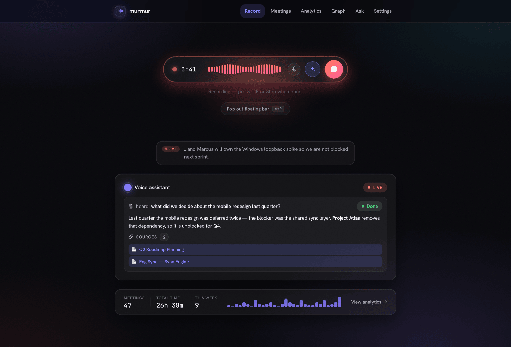
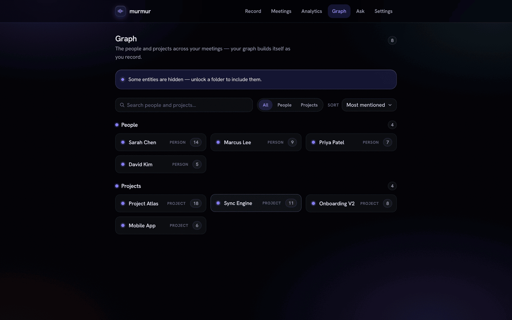

Murmur records your calls, transcribes and reasons over them entirely on-device, and lets you ask your AI a question live, mid-meeting — grounded in everything you've ever recorded. No cloud required.
Signed & notarized · macOS 13.4+ · Apple Silicon & Intel · your notes stay Markdown you own

One local pipeline turns a live call into a searchable, queryable memory — with no round-trip to someone else's server.
Your mic and the other side's system audio, captured and transcribed separately, then merged into a clean Me / Others transcript by on-device Whisper.
A reasoning model runs locally over a semantic index of everything you've recorded — writing a structured note and keeping the memory searchable forever.
Say a wake phrase mid-meeting and get a grounded answer with sources — or ask across months of calls afterward. The recording never stops.
Most meeting tools ship your audio to someone else's cloud. Murmur is built the other way around: the brain, transcription, and search are designed to run without a network at all.
With the bundled on-device model or Ollama, your audio and transcripts never touch a network. The reasoning happens on your Mac.
The whole database is SQLCipher-encrypted. On top, a per-folder AES-256-GCM lock adds content keys wrapped by a master key released only by Touch ID.
A sealed, locked folder leaks nothing — across the app, search, the graph, MCP, even the audio path. Locked meetings simply show as 🔒 Locked.
Murmur proves the ciphertext decrypts back before it ever blanks the plaintext — content is never lost, and locking is fully reversible.
A watcher can auto-relock sealed folders and wipe the cached key the moment screen sharing is detected — so a shared screen can't spill private notes.
If you ever opt into a cloud summarizer, emails, phone and card-like numbers are scrubbed first — and cloud egress is fail-closed behind a one-time consent.
| Brain / provider | Where it runs | Does meeting text leave your Mac? |
|---|---|---|
| On-device brain (Bielik / Qwen) | Fully local | No |
| Ollama | Fully local | No |
| Claude Code (default summarizer) | Local CLI → cloud | Redacted only |
| Anthropic API (bring your own key) | Direct HTTPS | Redacted only |
One encrypted store, three ways to use it — the app, a local MCP server, and your Obsidian vault.
This is the part most note-takers don't have. Trigger it by wake phrase or a single tap; it answers out of your meeting memory, live, with citations you can open — and the recording never stops.

Dual-stream recording captures your mic and the other side's system audio, transcribes each independently on-device, and merges them by wall-clock into a clean Me / Others transcript with live captions as you speak.

Every call becomes a clean note — summary, decisions, action items, quotes. People and projects are extracted automatically into a knowledge graph, and sealed folders stay hidden from it.

Every note is also exported as atomic Obsidian Markdown — YAML front-matter, [[wikilinks]], deep-links, and a canvas board option. Don't use Obsidian? They're still just files you own.

Everything Murmur does right now is completely free — no account, no trial, no catch. Pro and Team plans are on the roadmap, and every one keeps the same end-to-end-encrypted, on-device-first design.
The complete app. Everything runs on your Mac.
Your memory, on every device — still end-to-end encrypted.
Shared meeting memory for a team — privacy kept intact.
Pricing for Pro and Team is indicative and not final. Murmur stays free while in early access.
Free, local-first, and signed & notarized for macOS. Your audio never has to leave the device.